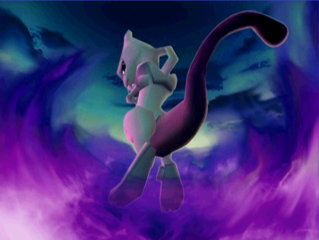

Modos de Juego
¡Descubre todas las opciones para batallar!
ESTADIO
Es el núcleo central del juego, cuyo objetivo es salir victorioso en combates contra otros Pokémon en 4 tipos de torneos, cada uno con una serie de reglas que pueden variar dependiendo del torneo. Al completar un torneo se registra al ganador en el Hall de la Fama.
LUCHA AHORA
Es un modo de batalla rápida para un jugador y multijugador. Aquí se te asignan seis Pokémon aleatoriamente al igual que a tu contrincante. De los seis Pokémon escogerás tres para combatir y ganará el que debilite los Pokémon del oponente.

EVENTO BATALLA
Enfréntate a un amigo conectando dos cartuchos de Game Boy y dos mandos. Cada jugador forma un equipo de seis Pokémon y elige tres para el combate. El vencedor será quien debilite primero al rival, con la posibilidad de ajustar reglas para personalizar la batalla.

BATALLA LIBRE
Un modo donde tú elijes las reglas de una batalla. Se pueden enfrentar hasta cuatro jugadores en equipo o contra la COM en las dificultades fácil, medio y difícil. Las reglas que se pueden elegir son las de los torneos del ESTADIO.

Castillo del Gim. Líder
Derrota a los entrenadores y líderes de gimnasio de las ediciones de Game Boy en el orden original y enfréntate al Alto Mando. La dificultad es superior: sin objetos y sin subir de nivel. Como recompensa, podrás obtener un Pokémon exclusivo y transferirlo a tus ediciones Rojo, Azul o Amarillo. Aquí también puedes jugar con tus Pokémon entrenados.
TODO VALE
A diferencia de otras competiciones, aquí las restricciones son mínimas. Pueden competir hasta cuatro jugadores de manera individual o en equipo, sin restricciones de Pókemon ni nivel.
vs MEWTWO
El desafío final: enfréntate al legendario Mewtwo en una batalla épica. ¡Solo los mejores entrenadores podrán derrotarlo y demostrar que son verdaderos campeones del Estadio!
Si logras derrotar a Mewtwo desbloquearás el modo R-2 (Round 2), un nivel de dificultad que te permite participar en todos los torneos de nuevo pero con más dificultad. Los Pokémon también serán diferentes y las peleas exigirán de todo tu conocimiento Pokémon si quieres lograr la victoria.
Y no te quedes sin explorar los minijuegos!